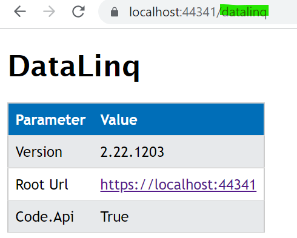

Configuration of the API application¶
File _config/api.config¶
If this file does not exist, it is automatically created with default values the first time the API starts. This section shows how it can be adapted for production use.
The file is an XML configuration file that contains various key-value pairs.
<?xml version="1.0" encoding="utf-8" ?>
<configuration>
<appSettings>
<!-- App Roles -->
<add key="app-roles" value="all" />
...
</appSettings>
</configuration>
Below is an overview of the most important configuration parameters.
Section CMS¶
Attribute |
Description |
|---|---|
|
Paths to the CMS files that are integrated into the API. The names of the CMS files should not be changed afterwards, since they are used to uniquely identify maps when they are created. |
|
Default GDI schema used from the CMS. If empty, no specific schema is enforced. |
|
Path to the output directory where images and generated files are stored. The web application should be able to access it and have write permissions. |
|
URL of the output directory that must be reachable for the user. This can be a virtual directory, but it should not be listable via the browser. |
|
Path to the server-side configuration of the API. This directory contains configuration files for the entire instance, including |
Section Proj4 Database¶
Attribute |
Description |
|---|---|
|
Connection string to a database containing projection information (table |
Section Cache Database¶
The sessions are stored in this database. It must contain the webgis_cache table (see below). If the Portal application is also used, both systems must use the same session cache. Alternatively, the cache can be stored in the file system, which means no database table is required.
Attribute |
Description |
|---|---|
|
Determines whether the cache database is stored as a database ( |
|
Connection string to the database or path in the file system. |
Section Cache Aside¶
To reduce the number of accesses to the cache database (since it is accessed on every API request), it is recommended for heavily used instances to set up an additional cache alongside the database. This enables fast access.
Attribute |
Description |
|---|---|
|
Defines the side cache used:
|
|
The corresponding connection string.
|
Section Subscriber Database¶
Subscribers are users who can log in to the WebGIS Portal to create maps. The information for these users can be stored either in a database or, in a simplified way, in the file system.
For storage in the file system, the connection string can be specified as follows:
value="fs:C:\webgis\webgis-repository\..."
Attribute |
Description |
|---|---|
|
Connection string to the subscriber database or to the storage location in the file system. |
|
List of administrator subscriber names, separated by commas (e.g. |
Section Subscriber Registration¶
Attribute |
Description |
|---|---|
|
Specifies whether subscribers can log in to this instance ( Example: An intranet instance could be used for configuration, while the internet instance is locked for access. Both instances can share the storage, or it can be copied between them. |
|
Specifies whether new subscribers may register themselves for the API (
|
|
Determines which functions a subscriber is allowed to create in the Portal. Possible values:
- |
Section Api/Portal Url¶
Attribute |
Description |
|---|---|
|
URL of the API as visible to the user. |
|
URL of the portal as visible to the user. |
|
The API must be able to communicate with the portal, e.g. to populate selection lists for authentication. An internal URL is recommended here if both applications are installed on the same server (e.g. |
Section Storage¶
User projects, portal page content, etc. are stored here. This is not a classic database, but a file-system-based storage (blobs).
Attribute |
Description |
|---|---|
|
Path to a directory used as storage. The directory can be changed at any time by copying the content to another storage location. Important The API application requires read and write permissions for this directory! |
Section Marker¶
default-marker-colorsIf you use dynamic markers (recommended), the default color values for the markers can be defined here. The value must consist of three hex values separated by commas for fill color, border color and text color, e.g.:82C828,b5dbad,fff.How dynamic markers are integrated into the viewer is shown in the
custom.jsdescription:https://docs.webgiscloud.com/de/webgis/apps/viewer/customjs/benutzerdefmarker.html
If you use
custom-recommendtion.js, dynamic markers are automatically used for search results.Note
Changes to this value are not necessarily visible immediately, because markers are cached on the client => clear the browser cache!
default-text-download-encodingIf, for example, users download CSV files, the encoding must be set so that all special characters contained are correctly encoded. The name of the encoding can be set here. The default value isiso-8859-1and should cover all German special characters. Which values are possible can be seen by calling the/admin/infopage for the API. It also shows which encoding is currently in use.
Section Logging¶
<!-- Logging (optional) -->
<add key="logging-type" value="files" />
<!-- Path for logging: the directory must have write permissions for WebGIS -->
<add key="Log_Path" value="C:\\apps\\webgis\\local\\webgis-repository\\logs" />
<add key="logging-log-performance" value="true" />
<add key="Log_Performance_Columns" value="SESSIONID;MAPREQUESTID;CLIENTIP;DATE;TIME;MAPNAME;USERNAME;X;Y;SCALE" />
<add key="logging-log-exceptions" value="true" />
<add key="trace" value="true" />
<!-- For debugging only, do not use in production -->
<add key="logging-log-service-requests" value="true" />
Logging can be done to files (logging-type = files).
Attribute |
Description |
|---|---|
|
Stores map requests and their access times in a CSV log file. |
|
Logs exceptions that occur during the runtime of the WebGIS API. |
|
Stores requests to the map server as well as their responses. This setting should be used only for debugging, since it generates a large amount of data and can negatively affect performance. Important Important: Requests are only logged if |
Section Query Results¶
(from version 8.26.801)
This section allows you to set how the results of identify or search queries are displayed on the map.
<section name="query-results">
<add key="selection-color" value="#0ff" /> <!-- optional, default: Cyan -->
<add key="selection-fill-color" value="#10ff" /> <!-- option, if differs from color -->
<add key="highlight-color" value="#0f0" /> <!-- optional, default: Yello -->
<add key="highlight-fill-color" value="#cf00" /> <!-- option, if differs from color -->
<add key="buffer-color" value="#f00" /> <!-- optional, default: Gray -->
<add key="buffer-fill-color" value="#300f" /> <!-- option, if differs from color -->
</section>
Attribute |
Description |
|---|---|
|
Sets the color for the selection of features. |
|
Sets the fill color for the selection of features. |
|
Sets the color for highlighting features. |
|
Sets the fill color for highlighting features. |
|
Sets the color for buffer zones. |
|
Sets the fill color for buffer zones. |
The fill-color is optional in each case and only needs to be specified if it is not
identical to the corresponding color. By default, the fill color is automatically derived
from the corresponding color by increasing the transparency (e.g. cyan becomes a transparent cyan).
If you want a different color for the fill, or want to define the transparency yourself,
this can be done via fill-color.
Hex color codes can be specified as values, e.g. #0ff, #00ffff for cyan
or #f00, #ff0000 for red.
If you specify four or eight characters, the transparency can also be defined,
e.g. #300f for a transparent red (20% opacity) or #300000ff for a
transparent blue (20% opacity). The first part of the hex code defines the transparency
(00 = fully transparent, ff = fully opaque), while the second part defines the color.
Section Quick Search¶
In this section you define which results are shown in the quick search and which search criteria can be used for it.
<section name="quick-search">
<add key="max-result-items" value="10" /> <!-- default: 5 -->
<add key="allowed-geocodes" value="*" />
</section>
Attribute |
Description |
|---|---|
|
Sets the maximum number of results shown in the quick search (e.g. 3). It is recommended not to set this value too high, to keep the results clear. |
|
Specifies which GeoCodes should be recognized in the quick search, separated by commas (e.g. |
Tool configuration¶
Some tools offered in the WebGIS Viewer require their own configuration entries. These are located in api.config. To keep api.config clear, the entries are grouped by sections.
<section> tags must be located inside the <appSettings> tag.
The following attributes can be defined in all sections for tools:
<section name="tool-...">
<add key="allow-anoymous-access" value="false" /> <!-- optional, default: true -->
</section>
allow-anonymous-access(from 8.26.1001): Specifies whether the tool may also be used by anonymous users. By default this is allowed (true), but for certain tools that offer sensitive functions, this should be set tofalse, so that only logged-in users have access.Note
The tool is always visible in the viewer if it was integrated via the MapBuilder. If an anonymous user clicks it, they receive an error message (e.g. Anonymous access is not allowed for this tool).
To hide a tool from anonymous users in the viewer, this must additionally be set in
custom.js, for example for the load/save tool:if(!webgis.hmac.userName()) { webgis.usability.toolProperties['webgis.tools.serialization.loadmap'] = { visibility: 'hidden' }; webgis.usability.toolProperties['webgis.tools.serialization.savemap'] = { visibility: 'hidden' }; }
In this case, the tool is completely hidden for anonymous users, while it remains visible for logged-in users.
Here are the tools that require their own configuration:
Tool MapMarkup¶
The configuration for the MapMarkup tool looks as follows:
<section name="tool-mapmarkup">
<add key="allow-add-from-selection" value="true" />
<add key="allow-add-from-selection-max-features" value="1000" />
<add key="allow-add-from-selection-max-vertices" value="10000" />
<add key="allow-download-from-selection" value="true" />
<add key="default-download-epsg" value="4326" />
<add key="save-name-maxlength" value="20" /> <!-- default: 40 -->
</section>
Important
For MapMarkup (drawing), all objects must be rendered directly in the client (browser). Therefore, a very high number of objects or objects with many vertices (e.g. cadastrally accurate district boundaries) can lead to performance problems.
Restrictions on the max values should therefore be applied depending on the use case. This is especially important for (freely accessible) internet applications.
Tool Coordinates (XY)¶
<section name="tool-coordinates">
<add key="allow-upload-max-rows" value="200" />
</section>
The XY tool allows the upload of coordinate lists. It can be used for visualization or for projection, when the coordinates are downloaded again after processing.
In addition, elevation values are automatically determined for the coordinates:
Coordinates are uploaded.
Depending on the configuration in the
etcdirectory (see below), elevation values are calculated and added as attributes.When downloading, these elevation values are also included in the output.
The number of coordinates that can be uploaded can be limited via the following parameter:
Attribute |
Description |
|---|---|
|
Sets the maximum number of rows that may be uploaded via the XY tool. |
Tool Printing¶
The configuration allows you to define the available print qualities (DPI).
Tip
A higher DPI improves readability, especially of text, but also increases the file size of the generated PDFs and the server load. In public internet applications, a print resolution above 150 DPI should be avoided, since it can put a heavy load on the server for large paper formats.
The configuration in api.config looks as follows:
<section name="tool-print">
<add key="qualities-dpi" value="150:Hoch (150 dpi),120:Mittel (120 dpi),225:Sehr hoch (225 dpi)" />
<add key="scales" value="1000000,500000,250000,100000,50000,25000,10000,5000,3000,2000,1000,500,250,100" />
<add key="default-format" value="A4.Landscape" />
<add key="scale-wysiwyg" value="false" />
</section>
Print qualities and scales
The individual values are separated by commas. Each entry consists of a DPI number (integer) and a description, separated by a colon :. In the viewer, the DPI values are shown sorted (e.g. 120, 150, 225). The first value in the list serves as the default value and is preselected when the print tool is first opened.
Optionally, the print scales can also be defined. If no values are specified, the system uses the available map zoom levels.
An alternative way to define print scales is to set them directly in the print layout file:
<?xml version="1.0" encoding="iso-8859-1" ?>
<layout scales="5000,2500,1000,500">
...
</layout>
Tip
The settings in the layout file take precedence over the values in api.config and the map scales. It is recommended to define the scales directly in the layout file, since this way suitable scales are predefined for each layout, which the user then has to use.
Tool Series Printing¶
Note
From version 8.X
The configuration for the series printing tool looks as follows:
<section name="tool-map-series-print">
<add key="qualities-dpi" value="150:Hoch (150 dpi),120:Mittel (120 dpi),225:Sehr hoch (225 dpi)" />
<add key="scales" value="50000,25000,10000,5000,3000,2000,1000,500,250,100" />
<add key="default-format" value="A4.Landscape" />
<add key="max-pages" value="10"/>
<add key="max-intersection-iterations" value="5000" /> <!-- default: max-pages * 50 -->
<add key="overview-page-layout" value="" /> <!-- default: layout_map_services_overview.xml -->
<add key="overview-page-format" value="A4.Portrait" /> <!-- default: empty => use same format as series pages -->
</section>
The settings for print qualities, format and scales work in the same way as for the normal print tool (see above).
In addition, the following parameters can be configured:
Attribute |
Description |
|---|---|
|
Sets the maximum number of pages that may be generated in the series print. This is used to avoid an excessive server load when very large areas are selected. |
|
Sets the maximum number of iterations for calculating the intersections. This is used to avoid an excessive server load when very complex geometries are processed. The value is currently used for the Intersect Raster creation method. If the default value of 50*[max-pages] is too low, it can be increased here. |
|
Defines the layout file for the overview page in the series print.
If no value is specified, the default layout |
|
Sets the paper format for the overview page (e.g. |
Tool Display Filter¶
<section name="tool-visfilter">
<add key="allow-toc-visfilter" value="true" />
</section>
From version 8.x, a display filter can be defined for each layer in the table of contents (TOC).
For this to be usable, the following parameter must be set in api.config:
Attribute |
Description |
|---|---|
|
Must be set to |
The behavior then is such that, for topics in the table of contents (TOC), a small filter icon is displayed that opens a query builder, with which the user can define a display filter in SQL style. Which fields are offered for this can be defined in the CMS for the service under QueryBuilder.
Note
This function should only be used in protected environments (intranet, never internet), since users can cause performance problems through improper filtering or exploit security vulnerabilities.
Note
Since this function must additionally be enabled
via custom.js: webgis.usability.allowTocVisFilters=true; (default: false).
This allows the function to be enabled only for specific maps.
Tool 3D Measurement¶
For 3D measurements to work, the following values must be configured in api.config:
<section name="tool-threed">
<add key="min-resolution" value="5" />
<add key="max-resolution" value="100" />
<add key="max-model-size" value="1500" />
<add key="max-scale" value="100000" />
<add key="texture-ortho-service" value="geoland_bm_of@default:0" /><!-- serviceId:layerId -->
<add key="texture-streets-overlay-service" value="geoland_bm_ov@default:0" /><!-- serviceId:layerId -->
</section>
Attribute |
Description |
|---|---|
|
Minimum resolution of the 3D model in meters. |
|
Maximum resolution of the 3D model in meters. |
|
Maximum model size in pixels (e.g. |
|
Maximum scale, above which no 3D model is created any more. |
|
Defines the service for aerial imagery textures, consisting of the service CMS ID and layer ID in the format |
|
Defines the service for street map textures, consisting of the service CMS ID and layer ID in the format |
Tool Save Map¶
With the Save Map tool, users can save the current map (services, visibility, map markup) as a project. The following settings can be configured for this:
<section name="tool-savemap">
<add key="name-maxlength" value="40" />
</section>
Attribute |
Description |
|---|---|
|
Specifies how many characters the project name may contain at most. The project is stored on the server in the file system (including encryption). This setting prevents the file names from becoming too long. |
Tool Load Map¶
With the Load Map tool, saved maps can be reopened by the user.
If a saved map is opened via the portal page (My Projects), a link is generated through which the map can be called. This link is shown in the browser’s address bar and can thus be copied and shared.
The following settings determine who is allowed to open saved maps. By default, maps can only be opened by the user who saved them.
<section name="tool-loadmap">
<add key="allow-collaboration" value="false" />
<add key="allow-anonymous-collaboration" value="false" />
</section>
Attribute |
Description |
|---|---|
|
By default, saved maps can only be opened by their creator.
If another user tries to open the map via a link, they receive an error message (Collaboration of projects is not allowed).
To enable the sharing of saved maps, this option must be set to |
|
If |
Danger
For data protection reasons, sharing saved links should not be allowed. Via a link, the current state of the map, including map markup, can be accessed at any time!
The recommended way to share a map is the Share Map tool. This creates and shares a snapshot of the current map. Later changes, in particular to map markup, are no longer visible in the shared version.
Tool CMS Upload¶
The configuration allows you to define whether CMS.xml files may be uploaded from a WebGIS CMS instance.
<section name="cms-upload-{cms-name}">
<add key="allow" value="true" />
<add key="client" value="cms-upload-client" />
<add key="secret" value="my-super-secret-with-min-length-24" />
</section>
{cms-name} is the CMS name as defined in api.config. Example:
<!-- here {cms-name} equals my-cms -->
<add key="cmspath_my-cms" value="{path-to-cms.xml}" />
Attribute |
Description |
|---|---|
|
Must be set to |
|
Defines an arbitrary client name that is authorized for the upload. This value must match the one in the |
|
Secure password with at least 24 characters to authenticate the upload. The value must match the one in the |
Tool Identify¶
The Identify tool allows you to query geo-objects. When the user clicks on the map (point identify), the system searches for objects within a certain pixel tolerance. This tolerance determines how large the area around the click point is, within which objects are captured. It is necessary because it can be difficult to click exactly on a desired point- or line-shaped object.
By default, a search is performed with a tolerance of ±20 pixels around the mouse cursor.
For area-shaped objects, this can be undesirable. Therefore, the tolerance per geometry type can be adjusted in api.config:
<section name="tool-identify">
<add key="tolerance" value="20" />
<add key="tolerance-for-point-layers" value="10" />
<add key="tolerance-for-line-layers" value="5" />
<add key="tolerance-for-polygon-layers" value="0" />
<add key="show-layer-visibility-checkboxes" value="true" />
<add key="max-vertices-for-hover-highlighting" value="0" />
<add key="result-date-format" value="dd.MM.yyyy" /> <!-- optional -->
<add key="result-time-format" value="HH.mm" />
<add key="result-date-time-culture" value="de-AT" />
</section>
Attribute |
Description |
|---|---|
|
General tolerance in pixels, within which objects are searched for. |
|
Specific tolerance for point-shaped objects. |
|
Specific tolerance for line-shaped objects. |
|
Specific tolerance for area-shaped objects. Tip Often set to |
|
Specifies whether a checkbox is also displayed in the list of found topics, with which the affected layer can be shown or hidden on the map. |
|
Sets the maximum number of vertices used for the hover highlighting
of objects. Hover highlighting takes effect when the
user moves the mouse cursor over the row in the result table.
Since the geometry of the object is sent to the client during the query,
a maximum value should be set here so as not to impair performance.
The default value is Tip If at least one feature in a query has more vertices than the specified number, hover highlighting is disabled for all features in that query, since it would otherwise be confusing for the user why only certain features are highlighted. In this case, the user must click on a row in the table to highlight a feature. |
|
Sets the date format for the results. The default value is |
|
Sets the time format for the results. The default value is |
|
Sets the culture for the date and time formats. The default is the culture under which the application is run (server operating system). This value affects the formatting of date and time values in the results. Tip The values for date format, time format and culture follow the |
Section Secured Tiles¶
Map tiles are always fetched by the client (WMTS services). However, if the services are protected, this has the disadvantage that the client also needs information about the credentials (user, password or token). These credentials, however, should never be passed on to the client.
A workaround is the secured tiles redirect API. With this, the tiles are fetched via a call to the WebGIS API. The WebGIS API acts here as a reverse proxy to the protected WMTS service. The credentials thus remain on the server.
Client => TileRequest => WebGIS API => TileRequest+Credentials => WMTS Server
The secured tiles redirect API must be explicitly enabled via api.config:
<section name="secured-tiles-redirect">
<add key="use-with-ogc-wmts" value="true" /> <!-- default: false -->
<add key="referers" value="www.server1.com,www.server2.com" /> <!-- optional -->
</section>
Attribute |
Description |
|---|---|
|
Only once this value is set to |
|
Restricts access to the secured tiles redirect API to specific referers. The domains of the servers on which the WebGIS Viewer runs can be entered here. If no value is specified, any client can access the API. |
Proxy Server¶
If services from the internet are integrated, a proxy server may be required.
The configuration is done in the optional section proxy in api.config:
<section name="proxy">
<add key="use" value="true" />
<add key="server" value="webproxy.mydomain.com" />
<add key="port" value="8080" />
<add key="user" value="" />
<add key="pwd" value="" />
<add key="domain" value="" />
<add key="ignore" value="localhost;localhost:8080;.my-domain.com$;^8\.;" />
</section>
Attribute |
Description |
|---|---|
|
Specifies whether the proxy server should be used. |
|
Host name or IP address of the proxy server. |
|
Port through which the proxy server can be reached. |
|
User name for the proxy server. |
|
Password for the proxy server. |
|
Domain name for logging in to the proxy. |
|
List of rules used to exclude certain servers from the proxy. Multiple rules can be specified separated by |
Security¶
<section name="security">
<add key="disable-anti-forgery" value="true" /> <!-- default: false. true is not recommended for production -->
<!-- optional: credentials for secured endpoints, e.g. cache/clear -->
<add key="secure-endpoint-url-password" value="****************************" />
<add key="secure-endpoint-basicauth-username" value="admin" />
<add key="secure-endpoint-basicauth-password" value="**************************************" />
</section>
For special scenarios, e.g. when the WebGIS API serves exclusively as a backend for another application
or a reverse proxy prevents validation, it may be necessary to disable anti-forgery token validation.
This can be done via the following setting disable-anti-forgery in api.config.
Furthermore, credentials for protected endpoints (e.g. for clearing the cache) can also be stored here.
``secure-endpoint-url-password``: A URL password that must be passed as the query parameter ``pww=***`` in the URL to gain access to the protected endpoint.
``secure-endpoint-basicauth-username`` and ``secure-endpoint-basicauth-password``: A user name and password for HTTP Basic Authentication, required for access to the protected endpoint.
Note
Since cache/clear is essential for the maintenance of the WebGIS API, the endpoint is reachable by default even without authentication.
However, it is strongly recommended to protect this endpoint to prevent misuse. Once credentials are stored in api.config,
the endpoint can only be reached with valid credentials.
If, for example, you call cache/clear after a CMS deployment (see cms.config), the URL password must be passed along in the link:
https://my-webgis-api/cache/clear?pwd=****************************
For instances that are publicly accessible, authentication for this endpoint should absolutely be enabled to prevent misuse.
If you publish the CMS via a CMS upload (see section CMS Upload), additional security measures are required (client, secret) to prevent unauthorized access.
After an upload, the cache is automatically reloaded, so calling cache/clear is not necessary in this case. Nevertheless, the endpoint should absolutely
be protected in publicly accessible instances, to prevent misuse.
Middleware¶
Additional functions can be implemented in the WebGIS API via the middleware, e.g. logging, forwarding or security checks.
<section name="middleware">
<!-- optional: Forwarded Headers Middleware, default: false -->
<!-- can be helpfull when WebGIS API is behind a reverse proxy and the original client IP and protocol information is needed -->
<add key="use-x-forwarded-headers" value="true" />
<!-- optional: log forwarded headers, default: false, only for debugging purposes -->
<!-- logs the original client IP and protocol information in the API logs (information level) -->
<!-- should only be enabled if use-x-forwarded-headers is true and the API is behind a reverse proxy -->
<add key="use-x-forwarded-headers-logging" value="true" />
</section>
HttpClient¶
<section name="httpclient">
<add key="default-timeout-seconds" value="300"/> <!-- default:0 = 100 secs -->
</section>
Attribute |
Description |
|---|---|
|
Specifies the maximum wait time for an HTTP request (e.g. waiting on a map service).
If the value is The value for how long to wait for a map server service is actually configured separately in the CMS for each service. Values higher than the value set here are ignored. The value specified here is the maximum timeout for all requests. Increasing or setting this value only makes sense if there are map services that, when printing large paper formats and resolutions, take longer than 100 seconds. When printing, WebGIS always waits a maximum of 100 seconds for a service, regardless of what is configured in the CMS. If a higher value is configured in the CMS, it must also be set here. |
DataLinq¶
This section specifies whether DataLinq is offered by a WebGIS API instance.
<section name="datalinq">
<add key="include" value="true" />
<add key="allow-code-editing" value="true" />
<!-- optional: Engine & Serverside Encryption -->
<add key="razor-engine" value="default" /> <!-- default, legacy -->
<add key="api-encryption-level" value="DefaultStaticEncryption" /> <!-- DefaultStaticEncryption, None, RandomSaltedPasswordEncryption -->
<!-- optional -->
<add key="allowed-code-api-clients" value="https://my-server/cms" />
<add key="initialize-sandbox-on-startup" value="false" /> <!-- default: false -->
<add key="environment" value="production" /> <!-- default, production, development, test -->
<add key="add-namespaces" value="" />
<add key="add-razor-whitelist" value="DXImageTransform.Microsoft." />
<add key="add-razor-blacklist" value="ForbiddenNamespace." />
<add key="add-css" value="-/content/styles/my-company/default.css?{version}" />
<add key="add-js" value="-/scripts/api/three_d.js?{version}" />
<!-- optional: SelectEngines>
<add key="SelectEngines:TextFileEngine:AllowedPaths:0" value="C:\datalinq\data\" />
<add key="SelectEngines:TextFileEngine:AllowedPaths:1" value="C:\webgis\data\" />
<add key="SelectEngines:TextFileEngine:AllowedExtensions:1" value=".txt" />
<add key="SelectEngines:TextFileEngine:AllowedExtensions:0" value=".csv" />
<!-- optional: experimentell -->
<add key="use-cache-token-for-one-2-n-links" value="true" /> <!-- default: false -->
</section>
Attribute |
Description |
|---|---|
|
Specifies whether DataLinq is offered via this instance. |
|
Controls whether DataLinq objects (endpoints, queries, views) can be edited via a DataLinq.Code instance. Danger For security reasons, this should only be enabled for local or intranet instances. On production systems, DataLinq should only be used as read-only. |
|
Specifies which Razor engine is used. By default this is the DataLinqLanguageEngineRazor ( |
|
The DataLinq endpoints and queries may contain partly sensitive data such as connection strings and SQL statements. This value specifies at which encryption level connection strings and query statements stored server-side are stored.
The last variant is the most secure; however, it can happen that different
instances can no longer read the DataLinq objects, since they were encrypted with a different
password. The Important When using DataLinq, it is important that the encryption is the same for all instances. Otherwise, DataLinq objects can no longer be read. This applies in particular to WebGIS instances that are distributed across different servers. |
|
If code editing is allowed, the URLs of the authorized DataLinq.Code instances can be specified here (separated by commas). In a WebGIS environment, this is usually the URL to the WebGIS CMS. If an unauthorized DataLinq.Code instance attempts to make changes, an error message is returned. |
|
Specifies whether the DataLinq sandbox should be initialized or updated when the API starts.
Since the sandbox is only a development aid, it should only be initialized on development or test systems.
On production systems, this value should be set to |
|
Specifies which environment is used for the instance. This affects, for example, which connection string is used for endpoints.
Possible values: |
|
List of additional namespaces that may be used in views (separated by commas). Danger Every additional namespace can pose a security risk. By default, |
|
List of exceptions that are ignored during the validation of Razor views. This can be used to explicitly allow certain values from the blacklist. Example: styles with To allow specific exceptions, only the necessary specific value should be entered here. |
|
List of additional terms that are blocked in Razor views. By default, the blacklist already contains: |
|
List of custom CSS files that are loaded in all report views. Syntax: absolute paths ( The placeholder |
|
List of custom JavaScript files that are included in all report views. Works analogously to |
|
Some SelectEngines require extended settings (see https://docs.webgiscloud.com/de/datalinq/configuration-api.html#datalinq-api) Settings for the individual SelectEngines can be specified as shown in the example above ( An example is the TextFileEngine, which allows text files to be served from the server. Here you can specify which directories and file extensions may be accessed. |
|
Experimental feature! For 1:n links from the result list, the parameters are no longer passed via |
Checking the DataLinq configuration To check whether the DataLinq settings are set correctly, the API can be called with the following path:
